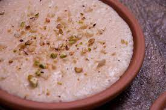

Kheer

Kheer
a chilled South Asian dessert made from slow-cooked rice, milk, and sugar, much like a rice pudding. It is typically flavoured with saffron, cardamom, raisins, and/or various nuts, notably pistachios, cashews, and almonds.
Go Back